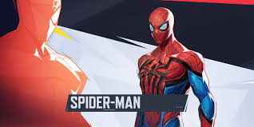

My favorite characters
Spider-man and loki are my favorite because of his move set and movement but i am only starting to learn how to play. One of the reasons I like to play him is, the movement he has and all the combos he could do.
Loki was my first main and i like his move set he is a healer and his ultimate is coping other characters abilities/ultimates. Also, I like that he is kind hard to die with if the other team dosn't have a character to counter him